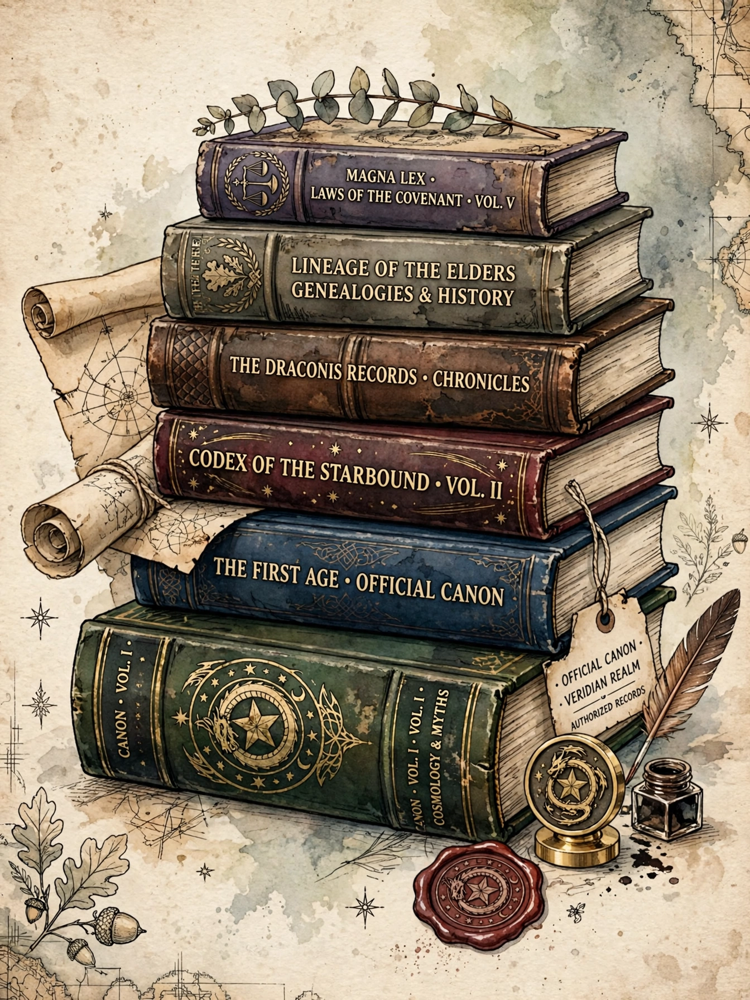

In fiction, canon is the body of material officially accepted as part of a story's universe — the works and facts fans and creators treat as authoritative, as distinct from apocryphal, fan-made or licensed-but-unofficial material.
| Canon | |
|---|---|
 | |
| Related terms | Continuity, retcon, fanon |
The term was borrowed from the biblical canon and applied to literature by fans of Sherlock Holmes, who distinguished Arthur Conan Doyle's original stories (the "Canon") from pastiches by others. Science fiction and media fandoms generalised the usage to franchises such as Star Trek and Star Wars, where rights holders declare tiers of canonicity.
Canon debates arise from contradictions between works, reboots, and retcons (retroactive continuity changes). In 2014 Lucasfilm reclassified most Star Wars Expanded Universe works as non-canonical "Legends". Fan consensus material is sometimes called "fanon", and "headcanon" denotes a personal interpretation.
Recreated from memory.